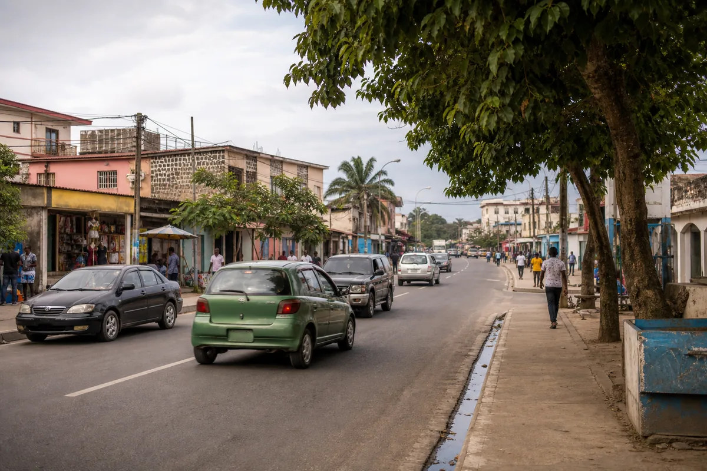

L’activité Tokeyi
Découvrez comment les trajets partagés relient les quartiers de Brazzaville et font vivre le réseau au quotidien.
Le réseau en un coup d’œil
Des repères simples pour comprendre l’activité de Tokeyi en ce moment.
Trajets disponibles
Chargement…
avec au moins une placeConducteurs actifs
Chargement…
sur le réseau TokeyiRéservations actives
Chargement…
effectuées ou en attenteNote moyenne
Chargement…
ensemble des conducteursTaux d’annulation
Chargement…
toutes réservationsImpossible de récupérer les chiffres du service pour le moment.
RéessayerLes conducteurs plébiscités
Celles et ceux que les passagers apprécient le plus.
Le classement apparaîtra dès que des conducteurs auront été évalués.
Proposer un trajetImpossible de charger les conducteurs les mieux notés.
Réessayer
Le parcours qui rassemble
La liaison la plus réservée sur le réseau Tokeyi.
Rechercher un trajetUn trajet sera mis en avant dès qu’il recevra des réservations.
Proposer un trajetImpossible de récupérer le trajet le plus réservé.
RéessayerLes quartiers qui font bouger Brazzaville
Les trajets proposés au départ de chaque quartier et leur prix moyen.
| Quartier | Nombre de trajets | Prix moyen |
|---|
Les quartiers apparaîtront ici dès que des trajets seront proposés.
Proposer un trajetImpossible de charger la répartition des trajets par quartier.
RéessayerÀ votre tour de rejoindre le mouvement
Trouvez une place disponible ou proposez votre prochain trajet entre les quartiers de Brazzaville.